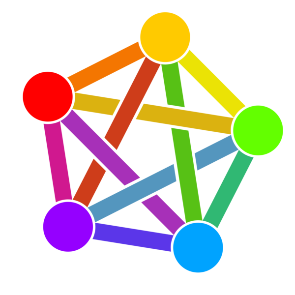
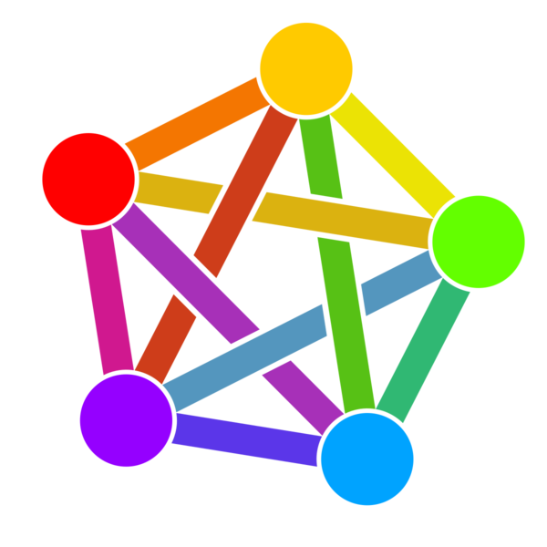

w4rner is how Laurence Warner signs off on code.
He received an
M.A. in Computational Social Science from U Chicago in 2019 on a UK Fulbright Award. He was the host of net:work? A Fulbrighter Conversation and was one of the authors of the nationwide expansion of Shortcut Hair.
More recently he has been working on
designing Moderner websites and helping teenagers & fellow creatives learn how.
IRL interests include
Laurence Warner Cerulean Sounds Productions Piccadilly Business Centre, Aldow Enterprise Park Manchester, M12 6AE Phone: 🇬🇧 7480 068523 Fax: 🤷♂️ Email: replace 4. with @ in this domain to "warner me" (encryptable via Proton Mail)

 
Last modified: Wed May 8 16:25:00 2024

Last modified: Wed May 8 16:25:00 2024
w4.rner.me © 2024 a Moderner Website by Laurence Warner is licensed under CC BY-SA 4.0